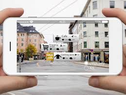
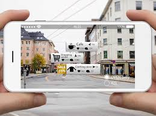
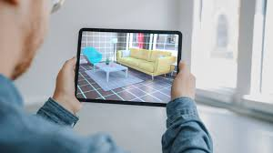

La Realidad Aumentada
La Realidad Aumentada (RA) asigna la interacción entre ambientes virtuales y el mundo físico, posibilitando que ambos se entremezclen a través de un dispositivo tecnológico como webcams, teléfonos móviles (IOS o Android), tabletas, entre otros.
En otras palabras, la RA muestra objetos virtuales en el contexto físico y se los muestra al usuario usando la interfaz del ambiente real con el apoyo de la tecnología. Este recurso viene revolucionando la forma en que lidiamos con nuestras tareas (e incluso, las que les asignamos a las máquinas)
De ese modo, podemos afirmar que la Realidad Aumentada se caracteriza por: combinar el mundo real y el virtual; ofrecer una interacción en tiempo real; adaptarse al entorno en que se insiere; interactuar con todas las capacidades físicas del entorno (en tres dimensiones)
Ir A Inteligencia Artificial Ir A Realidad Virtual 

